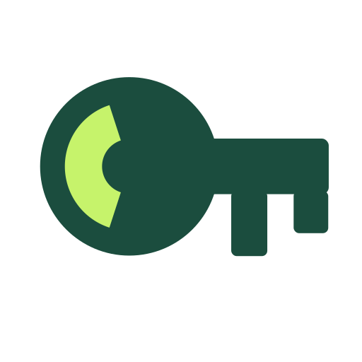
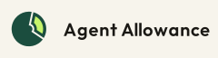
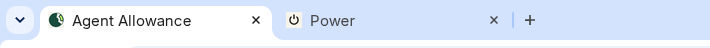

Agent Allowance
Spending power for AI, with a human key.
A pine key on cream. The bow is the allowance, and the lime arc is what is left to spend. The teeth are the human key.


Clear space
The dashed box is 8 units off every side, a quarter of the tile. Do not put type or another mark inside it.
One key
The bow is a closed gauge. The lime arc is what is left to spend. The bit is three teeth, so a person can see the approval in the mark. At 16px the bow and the teeth stay separate. Four concepts are in docs/logo-concepts.png. This one shipped.
Do not
No. A top gap and a stem is the power mark.
No. A cut to the center is a pie chart.
No. A closed disk does not show what is left.
No. Lime on cream with no pine keyline.
No. Do not recolor the lime red or amber.
Real Chrome tabs, favicon beside a power icon

Captured from headless Chrome’s tab strip at device scale 1 and 2. The bite stays on the upper right. The power icon’s gap stays on top, with a stem.
16px tab, light
The disk’s bite is on the upper right. The power icon’s gap is on top, with a stem.
16px tab, dark
Same favicon. The cream field keeps the disk readable on a dark tab.
Pine #F7F4EC on #1B4D3E
Cream #1A1814 on #F7F4EC
Accent #C6F36B on #1B4D3E
Amber #8A4518 on #F8EFE4
Red #8E2218 on #F8E8E4
On pine #FFB4A8 on #10241C